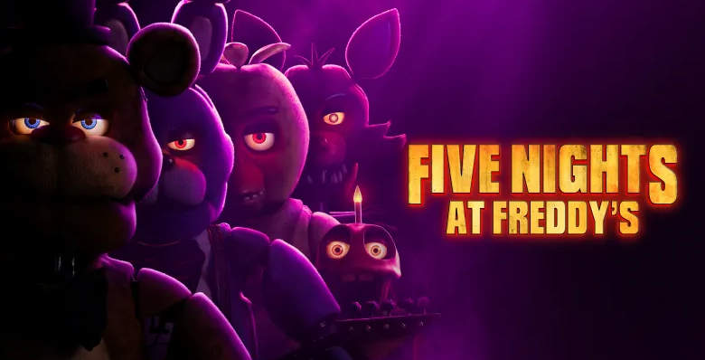

Então, aqui eu to depositando tudo oque eu to reaprendendo em programação na faculdade.
Não ligue para as minhas zoações, eu to refazendo muito do que eu já aprendi no ensino médio.
Não esquece de deixar o gosteikkkk.
WEB CONTENT OF THE SITE (conteúdo do site)
Meu jogo favorito é Five Nights At Freddy's, então muito do site vai conter conteúdos relacionados.
Sobre o jogo
Five Nights at Freddy's (FNaF) é uma série de jogos de terror criada por Scott Cawthon. Nos jogos, o jogador geralmente trabalha como vigia noturno em pizzarias ou locais parecidos, onde robôs animatrônicos se tornam perigosos durante a noite. O objetivo principal é sobreviver até o amanhecer, usando câmeras de segurança, portas e outros recursos limitados para se proteger dos animatrônicos, como Freddy Fazbear, Bonnie, Chica e Foxy. Além do terror e da jogabilidade simples, a série ficou famosa por sua história misteriosa, cheia de teorias sobre desaparecimentos, espíritos e o passado sombrio da empresa Freddy Fazbear's Pizza.

Nota dos jogos: do 1 até o 6 ⭐
| FNaF 1 | 7,7 / 10 |
| FNaF 2 | 7,5 / 10 |
| FNaF 3 | 6,7 / 10 |
| FNaF 4 | 7,0 / 10 |
| FNaF 5 | 7,5 / 10 |
| FNaF 6 | 7,5 / 10 |